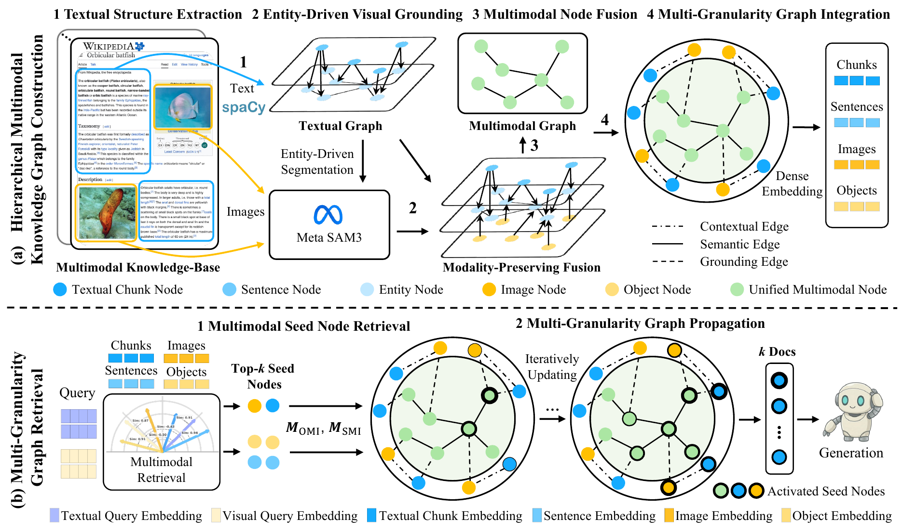
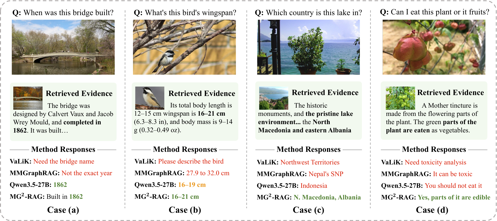
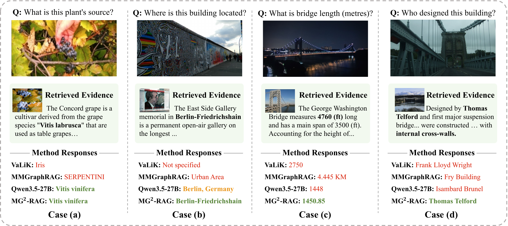
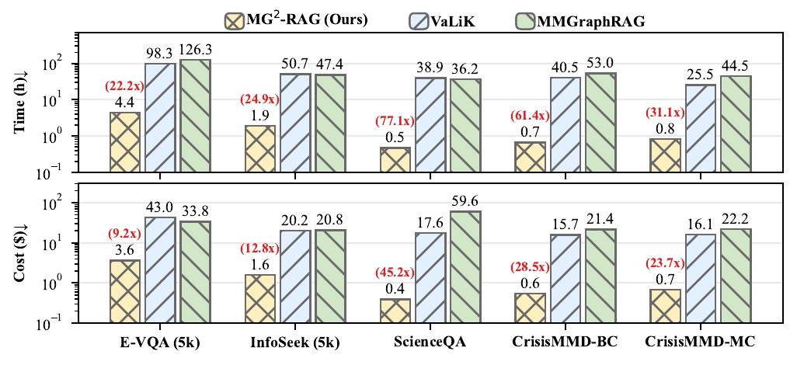

PPR OUTPUT
MULTIMODAL RETRIEVAL-AUGMENTED GENERATION
MG²-RAG
Multi-Granularity Graph for Multimodal Retrieval-Augmented Generation
A lightweight framework that preserves textual structure and fine-grained visual evidence in a unified multimodal graph, then retrieves across four semantic granularities with graph propagation.
43.3×average construction speedup
23.9×average cost reduction
Evaluated on retrieval, knowledge-based VQA, multimodal reasoning, and crisis classification.
Multi-Granularity Graph Case
Solid nodes form the PPR graph. Dashed sentence and object nodes visualize auxiliary retrieval pivots and their aggregation paths.
Drag nodes · scroll to zoom · drag canvas to pan
Graph Retrieval Example
Multimodal query signals activate the unified graph and rank the supporting chunk first.
Recall@1 = 1.0
RETRIEVED EVIDENCE
“Gestation lasts six to seven months, following which a single calf is born and immediately concealed in cover.”
Qwen3.6 generation1804 completion tokens · finish: stop
Framework Overview
Construction aligns text entities with visual regions. Retrieval activates evidence from chunks, sentences, images and objects before propagating relevance over the unified graph.

Knowledge-Based VQA Cases
Retrieved multimodal evidence supports entity recognition, factual grounding and cross-modal alignment.


Construction Efficiency
Lightweight textual structure extraction and entity-driven visual grounding reduce construction time and monetary cost.

Citation
If you find MG²-RAG useful in your research, please cite our paper.
@inproceedings{dai2026mg2rag,
title={MG$^2$-RAG: Multi-Granularity Graph for Multimodal Retrieval-Augmented Generation},
author={Sijun Dai and Qiang Huang and Xiaoxing You and Jun Yu},
booktitle={Proceedings of the 19th European Conference on Computer Vision (ECCV)},
year={2026},
}